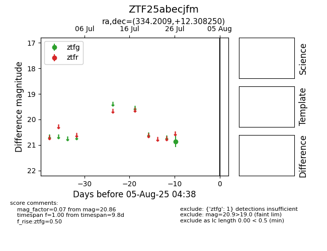

Target ZTF25abecjfm at 2025-08-05 04:38, see:
FINK: fink-portal.org/ZTF25abecjfm
Lasair: lasair-ztf.lsst.ac.uk/objects/ZTF25abecjfm
ALeRCE: alerce.online/object/ZTF25abecjfm
alt names
ZTF25abecjfm (ztf,fink)
coordinates:
equatorial (ra, dec) = (334.2009,+12.30825)
galactic (l, b) = (74.3074,-35.57722)
photometry
last ztfg=20.86
1 ztfg detections
